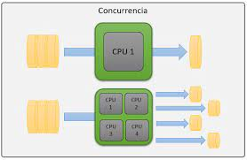

GESTION DE ADMINISTRACION DE PROCESOS DE SERVICIO
.png)
Es una serie de procesos que permiten dar seguimiento, estandarizar y buscar la mejora de los servicios y atención que una empresa o negocio brinda a sus clientes. Gracias a ella, es posible medir el desempeño, encontrar oportunidades de innovación y garantizar la satisfacción de las personas que interactúan con la organización. De acuerdo a la gestión, se considera al servicio como un eslabón de la cadena de suministro que (junto a otros como el control de calidad y procesos de venta) ayuda a conservar a los clientes. Por eso necesita valerse de herramientas que permitan automatizar aspectos como el control de inventario, fluidez en las entregas de artículos, registro de devoluciones o mercancía dañada e incluso las comunicaciones que se tienen con un cliente en particular hasta el momento.
GESTION DE ADMINISTRACION DE SUPERVISION
La supervisión es una actividad técnica y especializada que tiene como fin fundamental utilizar racionalmente los factores que le hacen posible la realización de los procesos de trabajo: el hombre, la materia prima, los equipos, maquinarias, herramientas, dinero, entre otros elementos que en forma directa o indirecta intervienen en la consecución de bienes, servicios y productos destinados a la satisfacción de necesidades de un mercado de consumidores, cada día más exigente, y que mediante su gestión puede contribuir al éxito de la empresa.
GESTION DE REDISTRIBUCION DE LAS CARGAS DE TRABAJO
.png)
Se trata de que cada colaborador tenga la posibilidad de: influir y tomar decisiones en la realización de sus actividades, con base en sus conocimientos y habilidades actuar con cierta autonomía o tomando la iniciativa participar y manejar los cambios, y aportar soluciones para crear mejores formas de trabajo y un entorno organizacional favorable
GESTION DE TRANSACCIONES

La gestión de transacciones trata el problema de asegurar la bd en un estado consistente aún en casos de acceso concurrente y de fallas.
GESTION DE COMUNICACIONES
.png)
Se trata del proceso de desarrollar un enfoque y un plan apropiados para las actividades de comunicación del proyecto basados en las necesidades de información de cada interesado o grupo, en los activos de la organización disponibles y en las necesidades del proyecto. Gestionar las Comunicaciones. Es el proceso de garantizar que la recopilación, creación, distribución, almacenamiento, recuperación, gestión, monitoreo y disposición final de la información del proyecto sean oportunos y adecuados. Monitorear las Comunicaciones. Es el proceso de asegurar que se satisfagan las necesidades de información del proyecto y de sus interesados.
CONTROL DE CONCURRENCIA

El control de concurrencia trata con los problemas de aislamiento yconsistencia del procesamiento de transacciones.El control de concurrencia distribuido de una DDBMS asegura que laconsistencia de la base de datos se mantiene en un ambiente distribuidomultiusuario.Si las transacciones son internamente consistentes, la manera más simple delograr este objetivo es ejecutar cada transacción sola, una después de otra.